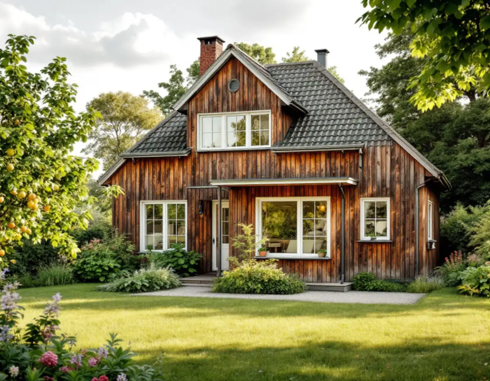
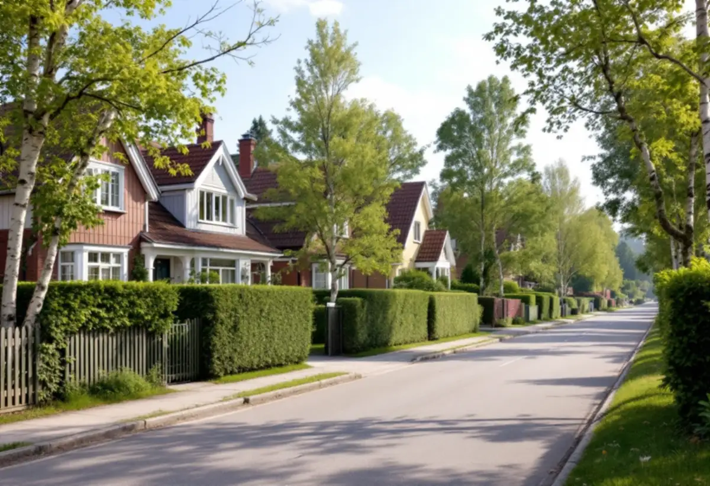

Historiken
Gamla ritningar och tidigare tillbyggnader gås igenom.
Många hus i Hässelby villastad har vuxit i omgångar – från en enkel stuga till en villa för hela året. Nästa tillbyggnad behöver därför räkna med det som redan har byggts. Geal Entreprenad AB mäter huset, går igenom reglerna och bygger till med total entreprenad.

En skrift om Västra Smedshagen från Stockholmshem och KTH berättar hur några arbetare 1893 fick arrendera tomter på godsets mark för att bygga egna bostäder, och hur tomtförsäljningen sedan pågick utan någon egentlig styckningsplan – storlekar och lägen bestämdes allt eftersom. Hässelby blev municipalsamhälle 1914 med namnet Hässelby Villastad, och 1926 fastställdes en stadsplan. På 1920-talet byggdes också ett hundratal sommarstugor.
Den historien syns i husen. Många villor har byggts till flera gånger, och tomterna är olika stora. Stadens vägledning Varsam utveckling av småhus- och villaområden beskriver dessutom hur villor ersattes på 1960- och 1970-talen och hur tomter kring 600 kvadratmeter har tillkommit genom avstyckning.
Stockholms stad skriver att en lovfri tillbyggnad får vara högst 30,0 kvadratmeter bruttoarea eller öppenarea, inte gå över husets taknock och tillsammans med andra lovfria tillbyggnader inte bli större än 30,0 kvadratmeter. Tidigare tillbyggnader som inte har krävt lov – till exempel friggebodsskärmtak, attefallstillbyggnader och attefallstakkupor – ska räknas in.
På ett hus som redan har byggts ut utan lov kan potten alltså vara förbrukad. Vi går igenom gamla ritningar och vad som har byggts till innan vi föreslår något. Stadens äldre handlingar för fastigheten kan du själv ta fram via e-tjänsten Bygg- och plantjänsten.
För en- och tvåbostadshus får en lovfri tillbyggnad strida mot detaljplanen, skriver staden, och den får till exempel placeras på prickmark. Den ska däremot stå 4,5 meter från gränsen mot granne, samfällighet och allmän plats, om inte berörda har gett ett skriftligt medgivande. Mot gatu- och parkmark är det oftast staden som ska ge medgivandet, och förfrågan skickas till stadsbyggnadskontoret.
På de avstyckade tomterna i villastaden ligger husen ofta nära flera gränser. Medgivandet ska innehålla fastighetsbeteckning, vilken åtgärd det gäller, en situationsplan med avståndet inritat och grannarnas underskrifter. Tillbyggnaden ska också stå minst 30 meter från ett järnvägsspår om inte infrastrukturförvaltaren har godkänt annat.
Påverkar tillbyggnaden husets bärande konstruktion eller brandskydd behövs en anmälan och ett startbesked, och det gäller också om tillbyggnaden får en eldstad eller vatten och avlopp. Ligger fastigheten i ett särskilt kulturhistoriskt värdefullt område, eller är huset blå- eller grönmarkerat i Stadsmuseets karta, krävs bygglov. Hässelby villastad är inte markerad i vägledningens tabell, men Hässelby strand och Hässelby gård är det.
När ett äldre hus byggs till är anslutningen mellan nytt och gammalt det svåra: takfall som ska mötas, grunder på olika nivåer och fukt i övergången. Vi ritar detaljerna innan vi bygger, och vi tar reda på hur den befintliga grunden ser ut innan den nya grunden dimensioneras. Vill du hellre bygga ett fristående hus beskriver vi det under attefallshus i Hässelby.

Gamla ritningar och tidigare tillbyggnader gås igenom.
Huset, gränserna och marken mäts vid ett gratis besök.
Förslag med anslutningsdetaljer mellan nytt och gammalt.
Medgivanden, anmälan eller bygglov efter vad som krävs.
Grund, stomme, tak och öppning mot befintligt hus.
Den nya delen används när slutbeskedet har kommit.
Rotavdraget gäller arbetskostnaden, inte material. Skatteverket räknar en tillbyggnad av ett bostadshus som rotarbete om någon av dess sidor sitter ihop med husets yttervägg till minst 75 procent eller om en dörr förbinder de två delarna.
Bostaden ska vara äldre än fem år och större delen av den ursprungliga stommen ska behållas. Där avdraget gäller drar Geal det direkt på fakturan.
Storlek och grundläggning, hur takfall och grund ska anslutas till ett hus som redan byggts till, om bärande väggar öppnas, våtrum och installationer samt om lov behövs. Efter ett gratis platsbesök får du ett skriftligt kostnadsförslag.
Mer boyta i samma hus.
Tillbyggnad →Takbyte, takbesiktning och plåtarbeten.
Takläggare i Hässelby →Villastaden, Hässelby strand och gård.
Takrenovering i Hässelby →Styckade tomter, gränser och kartan.
Attefallshus i Hässelby →Källarbadrum, backventil och bostadsrätt.
Badrumsrenovering i Hässelby →Riva, bygga nytt och delad tomt.
Byggföretag i Hässelby →Villastaden och radhusen.
Fasadmålning i Hässelby →Villastad, sommarstugor och grupphus.
Fasadrenovering i Hässelby →Villor, radhus och grupphus.
Fönsterbyte i Hässelby →Slipa trägolvet – eller lägga nytt.
Golvläggare i Hässelby →Golvet under mattan.
Golvslipning i Hässelby →Villastad, grupphus och radhus i Hässelby.
Målare i Hässelby →Plåttak efter eternit, rännor och beslag i Hässelby.
Plåtslagare i Hässelby →Altan, bod och plank i villastaden och radhusen.
Snickare i Hässelby →Eternit och asbest på taket.
Takbyte i Hässelby →Ny tapet i grupphus och villor.
Tapetsering i Hässelby →Grupphusen, eterniten och ventilationen.
Totalrenovering i Hässelby →